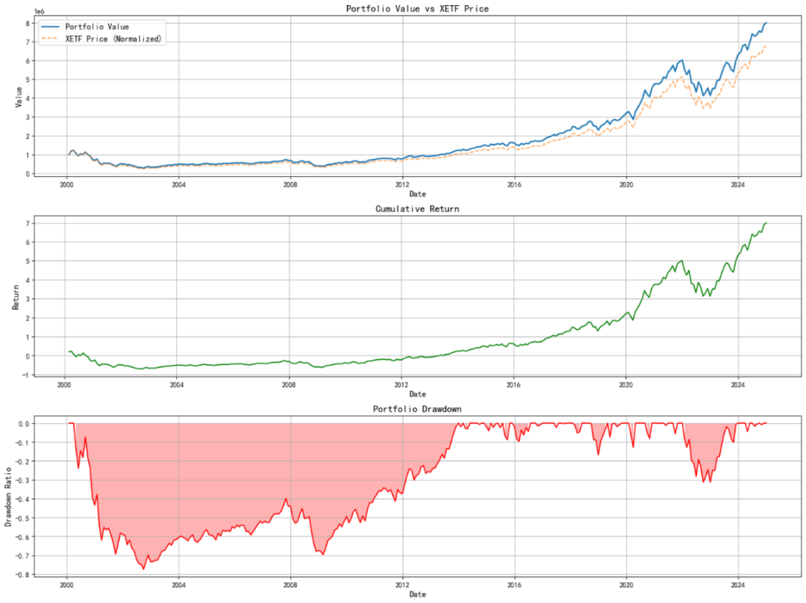

解读 Utility Difference Analysis of Single-Agent and Multi-Agent Large Language Models in Stock Investment Decision-Making，讨论多智能体分工、CIO 约束和股票决策表现。
本文解读论文
Utility Difference Analysis of Single-Agent and Multi-Agent Large Language Models in Stock Investment Decision-Making
working paper ｜ 2026-05-06
论文页面 ｜ PDF
核心要点
•多智能体的价值主要来自角色拆分，而不是简单把更多模型堆在一起。
•当 CIO 之类的中央决策层存在时，系统更接近真实投研组织。
•LLM 投资系统的关键评价点，不只是收益，更是流程是否可控。
论文引用
原论文：Utility Difference Analysis of Single-Agent and Multi-Agent Large Language Models in Stock Investment Decision-Making。作者比较了单智能体与多智能体 LLM 在股票投资决策中的表现，并引入类似投资组织的分工结构。
它讨论的不是“模型会不会聊天”，而是“模型系统如何参与决策链条”。
图表证据 ｜ Figure 4 ｜ 第4页
Utility Difference Analysis of Single-Agent and Multi-Agent Large Language Models in Stock Investment Decision-Making

论文关键图表裁切资产，用于公众号封面和正文证据。
它真正有用的部分，是把“会说”变成“有岗位分工”
如果让一个 LLM 什么都管，它往往会在解释、建议和执行之间来回跳，最后看起来很完整，实际却很难审计。多智能体结构的价值，是把价值、成长、宏观等分析职责拆开，再由中央决策代理做统一收敛。
这个思路比单个聊天模型更接近真实投研流程，因为真实团队本来就不是靠一个人把所有事情都想完。
但它的风险也在这里：分工越多，约束越重要
多智能体不天然更好。没有清晰权限、冲突解决和风险预算时，多个 agent 只会把噪声拆成更多小噪声。论文如果只强调收益提升，而没有把协同失败、错误传递和权限边界讲透，那就会显得过于乐观。
所以这类系统最关键的不是“多”，而是“谁能说话、谁能拍板、谁负责风控”。
对实务的启发，是把 LLM 放进组织结构，而不是放进泛化叙事
这篇论文适合提醒团队：如果要用 LLM 做投资辅助，最好先决定它在体系里扮演什么角色，再决定它是否值得接入。
把分工、审批和风控规则写清楚，比继续加长 prompt 更重要。
补充来看，多智能体系统最大的考验不是推理能力，而是接口设计。只要角色边界、审批链和异常回退没有写清楚，模型越多反而越容易把责任稀释掉。对于落地团队来说，先把组织结构和风控规则定死，再让 agent 去填内容，通常比让模型自由对话更稳。
再补一层判断：多智能体系统适合做研究组织的镜像，不适合做无限自由的自动化交易器。它的价值在于把原本分散在研究员脑中的分工显式化，帮助团队更快做信息汇总和初步筛查；但真正下单前，仍然需要传统量化模型和硬风控兜底。
想系统看 AI量化课程、学习路径与更多量化技巧文章，可访问 AI量化学院。